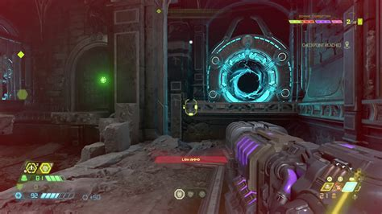

A 2016-os Doom folytatásában a Földön kell megállítanunk a démoni invázió terjedését. Az id Software a Doom reboot alapjaira építkezve rakta össze a Doom Eternalt, továbbfejlesztve a fegyvereket, a fejlesztési rendszert, és kibővítve a Doom Slayer eszköztárát, aki a karjára szerelt pengének köszönhetően látványosabb kivégzésekre képes, lángszórójával páncéldarabokat kényszeríthet ki a démonokból, fagyasztó gránátjával pedig a legfürgébb ellenfeleket is megállíthatja. Feladata ezúttal elsősorban a Föld megtisztítása a démoni inváziótól. Vadabb ellenfelek, kidolgozottabb történet vár ránk.div>

A srácok tudatosan nem hívták Doom 2-nek az Eternalt, pedig van pár elem, amiben határozottan hasonlít a sorozat 1994-ben megjelent, második részéhez (olykor egész leplezetlenül, de spoilerek talajára inkább nem tévednék). Míg a 2016-os Doomban időnk nagy részét a Mars és a pokol között ingázva töltöttük, most a Földre utazunk (elsősorban), mivel ott a Khan Maykr (akinek nevét egyszer nem tudtam még helyesen leírni anélkül, hogy rá kelljen keresnem) és papjai próbálják rabosítani a népet. Az előző játék végén nem sikerült visszakergetnünk a pokol lényeit az otthonukba - azzal zárult a sztori, hogy Dr. Samuel Hayden elteleportálta a Doom Slayerré avatott névtelen főhőst egy ismeretlen helyre. Nem teljesen tiszta, hogy mi történt azóta, csak az világos, hogy a Föld nincs optimális állapotban, a túlélőket bárkákon próbálják kimenekíteni, miközben a démonok egyre nagyobb pusztítást végeznek, és a Föld domborzata is fokozatosan egyre kedvezőtlenebbé alakul.